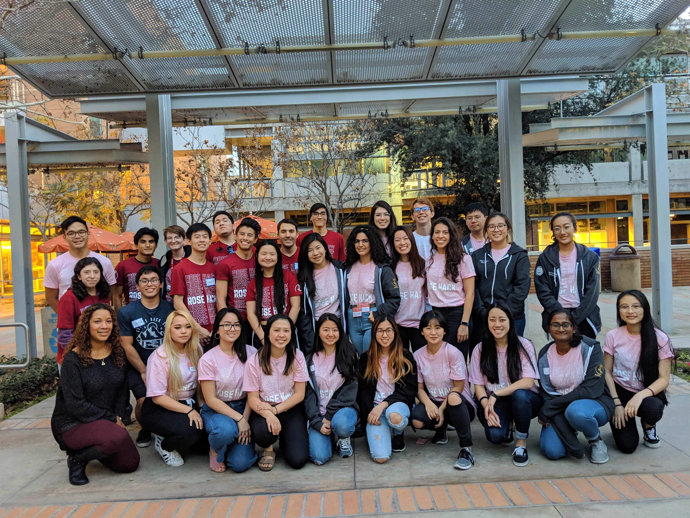
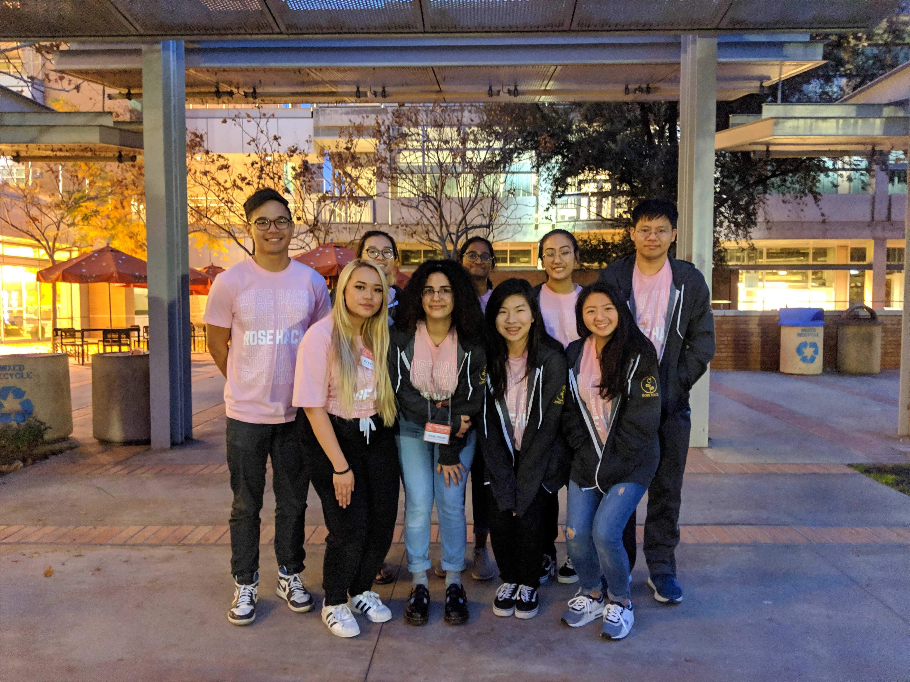

Community & Leadership
I am committed to supporting underrepresented groups in computing and helping build inclusive spaces where students feel welcomed, encouraged, and connected. My community work has focused on mentorship, student leadership, and creating opportunities for women and non-binary students in technology.
Leadership & Community Building
Rose Hack Co-Founder & Director
Helped create and organize Rose Hack, UCR's first women-centric hackathon, providing a supportive environment for women and non-binary students to explore technology and build projects.
Women in Computing at UCR
Active member and graduate student leader in WINC, supporting networking events, mentorship programs, and professional development opportunities for women in computer science.
Rose Hack Highlights

